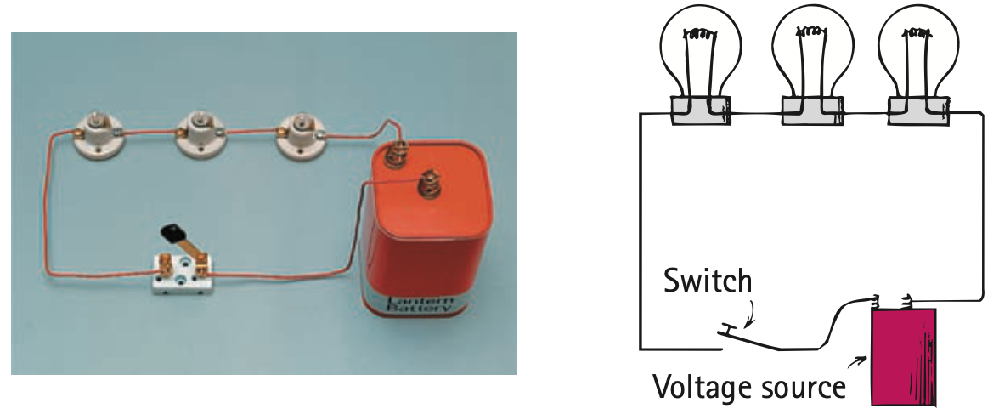
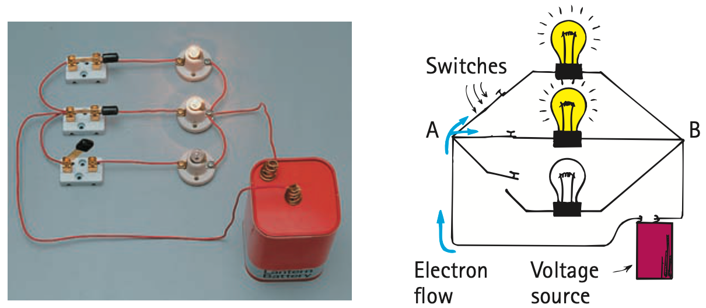
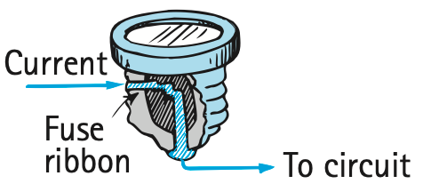

Electric Circuits
Electric Circuits
Any path along which electrons can flow is a circuit. For a continuous flow of electrons, there must be a complete circuit with no gaps. A gap is usually provided by an electric switch that can be opened or closed to either cut off or allow energy flow. Most circuits have more than one device that receives electric energy. These devices are commonly connected in a circuit in one of two ways, series or parallel. When connected in series, they form a single pathway for electron flow between the terminals of the battery, generator, or wall socket (which is simply an extension of these terminals). When connected in parallel, they form branches, each of which is a separate path for the flow of electrons. Both series and parallel connections have their own distinctive characteristics. We shall briefly discuss circuits that use these two types of connections.
Series Circuits
A simple series circuit is shown in Figure 23.17. All devices, lamps in this case, are connected end to end, forming a single path for electrons. The same current exists almost immediately in all three lamps, and also in the battery, when the switch is closed. The greater the current in a lamp, the brighter it glows. Electrons do not “pile up” in any lamp but flow through each lamp—simultaneously. Some electrons move away from the negative terminal of the battery, some move toward the positive terminal, and some move through the filament of each lamp. Eventually, the electrons may move all the way around the circuit (the same amount of current passes through the battery). This is the only path of the electrons through the circuit. A break anywhere in the path results in an open circuit, and the flow of electrons ceases. Burning out one of the lamp filaments or simply opening the switch could cause such a break.

Fuel Cells
A battery is an energy-storage device. Once its stored chemical energy is converted to electric energy, its energy is depleted. Then it must be discarded (if it is a disposable battery) or recharged with an opposite flow of electricity.
A fuel cell, on the other hand, converts the chemical energy of a fuel to electric energy continuously and indefinitely, as long as fuel is supplied to it. In one version, hydrogen fuel reacts chemically with oxygen from the air to produce electrons and ions—and water. The ions flow internally within the cell in one direction; the electrons flow externally through an attached circuit in the other direction. Because this reaction directly converts chemical energy to electricity, it is more efficient than if the fuel were burned to produce heat, which, in turn, produces steam to turn turbines to generate electricity. The only “waste product” of such a fuel cell is pure water, suitable for drinking!
The space shuttle uses hydrogen fuel cells to meet its electrical needs. (Its hydrogen and oxygen are both brought on board in pressurized containers.) The cells also produce more than 100 gallons of drinking water for the astronauts during a typical week-long mission. Back on Earth, researchers are perfecting fuel cells for a variety of vehicles. Some fuel-cell buses operate in several cities, such as Vancouver, British Columbia, and Chicago, Illinois. In the future, commercial buildings as well as individual homes may be outfitted with fuel cells as an alternative to receiving electricity from regional power stations.
So why aren’t fuel cells more widespread today? Currently, they are more costly than other sources of electricity. But mainly there is the question of the availability of the choice fuel—hydrogen. Although hydrogen is the most plentiful element in the universe, and it is plentiful in our immediate surroundings, it is locked away in water and hydrocarbon molecules. It is not available in a free state (a fact overlooked by people cheering for hydrogen-fueled vehicles NOW). Energy is required to separate hydrogen from molecules in which it is tightly bonded. The energy needed to make hydrogen is presently supplied by conventional energy sources.
Hydrogen is, in effect, an energy-storage medium. Like electricity, it is created in one place and used in another. Hydrogen is a highly volatile gas that is difficult to store, transport, and use safely. Fuel cells will be attractive in the future when these difficulties are minimized, when the cost of fuel cells comes down, and mainly, when the hydrogen needed to fuel them is generated by alternative energy sources such as wind or solar.
The circuit shown in Figure 23.17 illustrates the important characteristics of series connections:
- Electric current has only a single pathway through the circuit. This means that the current passing through the resistance of each electrical device along the pathway is the same.
- This current is resisted by the resistance of the first device, the resistance of the second, and that of the third also, so the total resistance to the current in the circuit is the sum of the individual resistances along the circuit path.
- The current in the circuit is numerically equal to the voltage supplied by the source divided by the total resistance of the circuit. This is in accord with Ohm’s law.
- The supply voltage is equal to the sum of the individual “voltage drops” across each device. This is consistent with the total energy supplied to the circuit being equal to the sum of the energies supplied to each device.
- The voltage drop across each device is proportional to its resistance—Ohm’s law applies separately to each device. This follows from the fact that more energy is dissipated when a current passes through a large resistance than when the same current passes through a small resistance.
It is easy to see the main disadvantage of a series circuit: If one device fails, current in the whole circuit ceases. In days of yore, Christmas tree lights were connected in series. When one bulb burned out, it was fun and games (or frustration) trying to locate which bulb to replace.
Most circuits are wired so that it is possible to operate several electrical devices, each independently of the others. In your home, for example, a lamp can be turned on or off without affecting the operation of other lamps or electrical devices. This is because these devices are connected not in series but in parallel with one another.
Parallel Circuits
A simple parallel circuit is shown in Figure 23.18. Three lamps are connected to the same two points, A and B. Electrical devices directly connected to the same two points of an electric circuit are said to be connected in parallel. The pathway for current from one terminal of the battery to the other is completed if only one lamp is lit. In this illustration, the circuit branches into three separate pathways from A to B. A break in any one path does not interrupt the flow of charge in the other paths. Each device operates independently of the other devices.

The circuit shown in Figure 23.18 illustrates the major characteristics of parallel connections:
- Each device connects the same two points A and B of the circuit. The voltage is therefore the same across each device.
- The current divides among the parallel branches. Ohm’s law applies separately to each branch.
- The total current in the circuit equals the sum of the currents in its parallel branches. This sum equals the current in the battery or other voltage source.
- As the number of parallel branches is increased, the overall resistance of the circuit is decreased. The overall resistance is lowered with each added path between any two points of the circuit. This means the overall resistance of the circuit is less than the resistance of any one of the branches.
Parallel Circuits and Overloading
Electricity inside a home is usually fed by two wires called lines. These lines, which are very low in resistance, branch into parallel circuits connecting ceiling lights and wall outlets in each room. Lights and wall outlets are connected in parallel, so all are impressed with the same voltage, usually about 110–120 V. As more devices are plugged in and turned on, more pathways for current result in lowering of the combined resistance of each circuit. Therefore, a greater amount of current occurs in the circuits. The sum of these currents equals the line current, which may be greater than is safe. The circuit is then said to be overloaded.
We can see how overloading occurs by considering the circuit in Figure 23.19. The supply line is connected in parallel to an electric toaster that draws 8 A, to an electric heater that draws 10 A, and to an electric lamp that draws 2 A. When only the toaster is operating and drawing 8 A, the total line current is 8 A. When the heater is also operating, the total line current increases to 18 A (8 A to the toaster and 10 A to the heater). If you turn on the lamp, the line current increases to 20 A. Connecting any more devices increases the current still more. Connecting too many devices into the same circuit overheats the wires feeding the circuit, which can cause a fire.

Safety Fuses
To prevent overloading in circuits, fuses may be connected in series along the supply line. In this way, the entire line current must pass through the fuse. The fuse shown in Figure 23.20 is constructed with a wire ribbon that will heat and melt at a given current. If the fuse is rated at 20 A, it will pass 20 A but no more. A current greater than 20 A will melt the fuse, which “blows out” and breaks the circuit. Before a blown fuse is replaced, the cause of overloading should be determined and remedied. Often, insulation that separates the wires in a circuit erodes and allows the wires to touch. This greatly reduces the resistance in the circuit, effectively shortening the circuit path, and is called a short circuit.
In modern buildings, fuses have been largely replaced by circuit breakers, which use magnets or bimetallic strips to open a switch when the current is too great. Utility companies use circuit breakers to protect their lines all the way back to the generators.

Figure 23.21 was omitted because no matching captured image was supplied.
Summary of Terms
Series circuit An electric circuit in which electrical devices are connected along a single loop of wire such that the same current is in each device.
Parallel circuit An electric circuit in which electrical devices are connected in such a way that the same voltage acts across each one, and any single one completes the circuit independently of all the others.
Reading Check Questions
23.9 Electric Circuits
- In a circuit of two lamps in series, if the current through one lamp is 1 A, what is the current through the other lamp? Defend your answer.
- If a voltage of 6 V is impressed across the circuit in the preceding question and the voltage across the first lamp is 2 V, what is the voltage across the second lamp? Defend your answer.
- In a circuit of two lamps in parallel, if there is a voltage of 6 V across one lamp, what is the voltage across the other lamp?
- How does the sum of the currents through the branches of a simple parallel circuit compare with the current in the voltage source?
- What is the function of fuses or circuit breakers in a circuit?
Textbook Sections: 23.9
Learning Target: Students will analyze series, parallel, and mixed circuits by tracing current paths, comparing voltage drops, and explaining how circuit changes affect brightness, current, resistance, and safety.
- I can distinguish series circuits from parallel circuits.
- I can explain why a complete circuit is required for steady current.
- I can trace current paths through simple and branched circuits.
- I can compare voltage and current in series and parallel circuits.
- I can calculate equivalent resistance in simple series and parallel circuits.
- I can explain how fuses, circuit breakers, and overloads protect circuits.